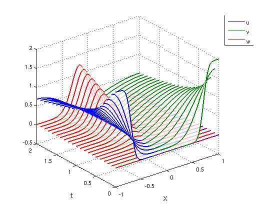

Coupled system of reaction-diffusion equations
Nick Hale, October 2010
(Chebfun example pde/ReactDiffSys.m)
We model the concentrations of three chemicals u, v, and w contained in a tube. u and v are intially located at either end of the tube with profiles u0 and v0, but as they diffuse along the tube they meet, react, and produce the third chemical w. The system we arrive at is:
u_t = 0.1 u" - 100 u v v_t = 0.2 v" - 100 u v w_t = 0.001 w" + 200 u v
with Neumann conditions at the boundaries.
We work on the unit interval:
d = [-1,1];
x = chebfun('x');
For initial conditions we take u0 mainly on the left, v0 mainly on the right, and w0 equal to zero:
u0 = 1 - erf(10*(x+0.7)); v0 = 1 + erf(10*(x-0.7)); w0 = 0;
Here is the anonymous function defining the problem for PDE15S.
f = @(u,v,w,D) [ 0.1*D(u,2) - 100*u.*v ... 0.2*D(v,2) - 100*u.*v ... .001*D(w,2) + 200*u.*v ];
(Here the fourth input, D, points f to the derivative operator.)
We solve the system and plot the result:
[tt uu] = pde15s(f,0:.1:2,[u0 v0 w0],'neumann'); cols = get(0,'DefaultAxesColorOrder'); plot3(0,0,NaN,0,0,NaN,0,0,NaN), hold on % Used for legend entries legend('u','v','w') for k = 1:numel(uu) waterfall(uu{k},tt,'simple','linewidth',1.6,'edgecolor',cols(k,:)) end FS = 'fontsize'; xlabel('x',FS,14), ylabel('t',FS,14), grid on, hold off
This example, which comes from Pedro Gonnet, can also be found as the "Diffusion and reaction of three chemicals" demo among the PDE-Systems demos of CHEBGUI.